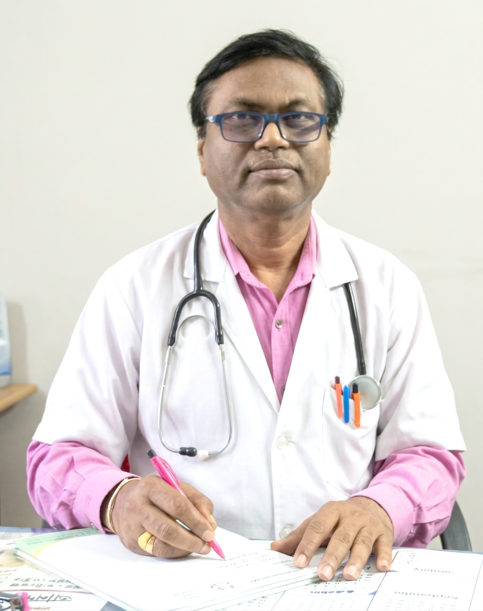
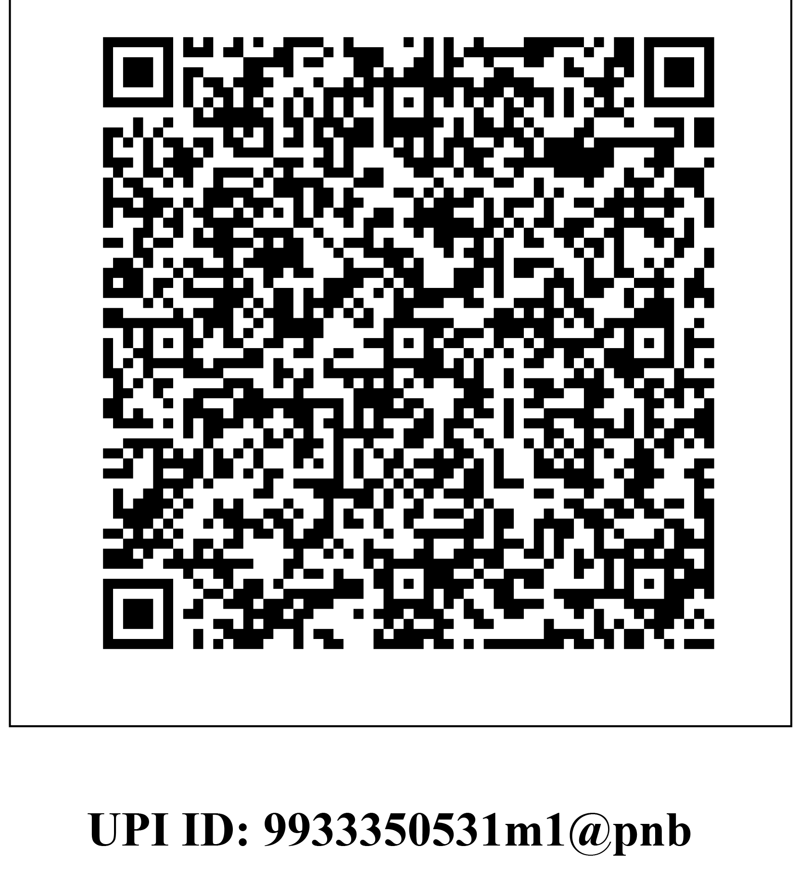

♥
Healthcare
Medical camps, health awareness, healthcare support and initiatives intended to improve access to essential services.
Saraswati & Dr Ajit Kumar Maulik Educational & Welfare Trust is a registered charitable trust based in Malda, West Bengal, working toward education, healthcare, social welfare and community support.
The Trust works to support communities through education, healthcare, welfare and relief-oriented activities, with particular attention to people and communities that need practical support.
The Trust was registered on 24 February 2022 with the District Sub-Registrar, Malda. Its NGO DARPAN profile identifies it as a non-government Trust registered under the Indian Trust Act.
Our work is aligned with the Trust's charitable objects and community-focused activities.
Medical camps, health awareness, healthcare support and initiatives intended to improve access to essential services.
Education support, assistance for economically disadvantaged students and development of learning opportunities.
Support for poor, widows, destitute persons and communities facing difficult circumstances, subject to programme availability.
Community-oriented initiatives supporting rural healthcare, awareness, welfare and broader local development.
The Trust has provided the following healthcare information for publication:
Please contact the Trust / participating healthcare centre to confirm current eligibility, dates, terms and availability before relying on any offer.
Healthcare partnership information supplied for this Trust website.
Contact the Trust
M.B.B.S (Cal), MS, L.L.B
Laparoscopic Surgeon, Gynaecologist, Obstetrician & Urologist
Malda Medical College & Hospital
Occupation: Doctor, Lawyer & Social Worker
Dr. Ajit Kumar Maulik serves as President of the Trust and leads its charitable and welfare-oriented activities with a focus on healthcare, education and community service.
The following details are based on the Trust documents supplied for this website.
Registered on 24 February 2022 with the District Sub-Registrar, Malda.
DARPAN registration dated 06 July 2024; Type: Trust (Non-Government).
Provisional registration from AY 2025-26 to AY 2027-28.
Provisional approval from AY 2025-26 to AY 2027-28.
Trust PAN shown in the Income Tax and DARPAN documentation.
Current account maintained in the Trust's name. Full account number is intentionally not published here.
We will publish programme numbers here as verified activities and beneficiary records are documented.
Contributions can support healthcare, education and welfare initiatives of the Trust. For online donations, use the Trust's UPI details below.
Please verify the recipient name displayed by your UPI application before completing a donation.

9933350531m1@pnb Scan to make a donationFor donations, volunteering, healthcare programmes, education support and other Trust activities, contact us directly.